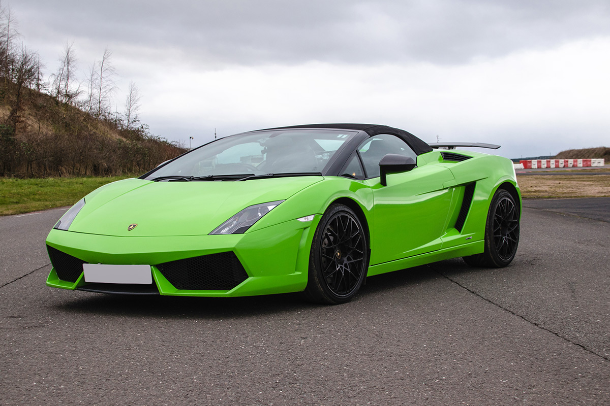
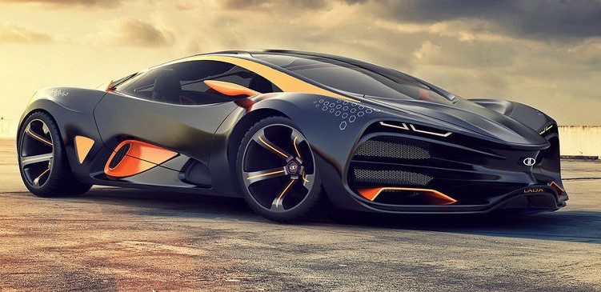

Суперкар
Суперкар (калька з англ. supercar — над-автомобіль) — найчастіше мається на увазі «супер-спортивний автомобіль». Умовно-виділяється підклас (верхній сегмент) ширшого класу спортивних автомобілів. Серед інших спортивних автомобілів виділяється ексклюзивним обладнанням, динамічними характеристиками і ціною. Потужність мотора вимірюється сотнями к.с., максимальна швидкість — від 300 км/год і вище (так званий «Club 330») і відповідна ціна, яка вимірюється в сотнях тисяч євро або доларів.
Передісторія
Термін «supercar» з'явився в 1920-ті роки XX століття і закріпився в 1960-1980-ті роки, завдяки зближенню ринку стандартних легкових автомобілів і професійних гоночних моделей. У 1980-1990-ті роки на ринку спортивних автомобілів найбільш відомими були серійні машини компаній Aston Martin, Jaguar, Porsche, Ferrari і Lamborghini, найбільш потужні моделі яких мали поріг швидкості в 320-330 км/год. У 2000-них роках, внаслідок підвищення маркетингового попиту, стався стрибок: з'явилося покоління нових фірм, що ставлять перед собою мету створення власного автомобіля, що має «індивідуальне обличчя» і значно перевершує усталений стереотип максимуму швидкості. Тимчасові рамки власне титулу «супер-автомобіль» рухливі, оскільки модельний ряд постійно оновлюється і з плином часу з'являються більш дорогі і більш швидкісні моделі. Однак найбільш видатні автомобілі залишаються в історії автомобілебудування, поповнюють приватні колекції, музеї і, як правило, з часом не втрачають в ціні. Споживчий ринок має тенденцію до розширення, оскільки володіння подібною машиною є статусним символом. Найбільше ходіння сам термін «суперкар» має в автомобільній пресі.
Критерії
Термін «суперкар» зазвичай вказує на зібраний на заводі-виробнику автомобіль, що задовольняє умовам дорожніх автомобілів, аніж на модифікований звичайний автомобіль, що може мати схожі характеристики. Суперкари зазвичай розраховані на дорожнє використання, а не на перегони, і тому їх стандартне обладнання не включає каркас безпеки та інші речі потрібні для гоночного автомобілю (боліду).
